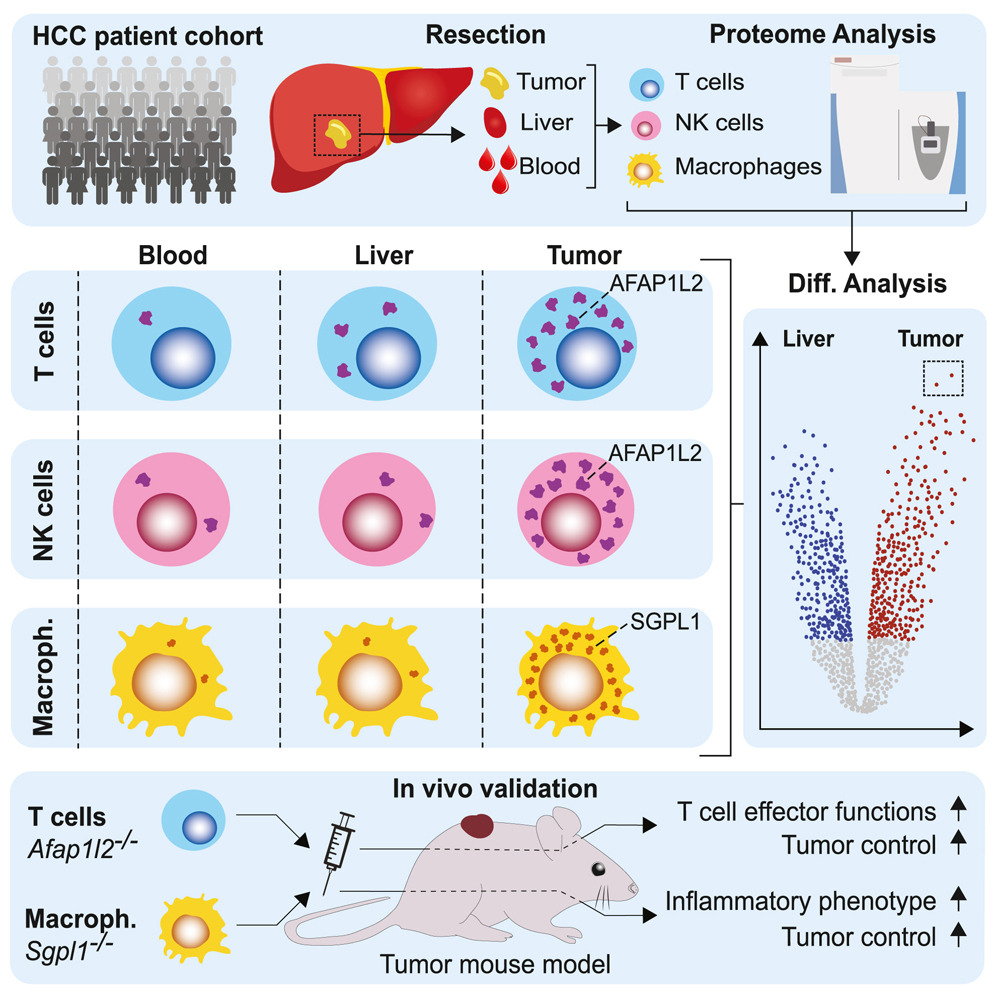

2 Apprivoiser ses données : statistiques descriptives et exploratoires
Dans ce chapitre, nous dressons un bref rappel des approches statistiques permettant d’appréhender la composition générale ou certaines caractéristiques pertinentes d’un jeu de données.
2.1 Cas d’étude : données protéomiques d’une étude immunologique
Pour ce chapitre comme pour les suivants, nous utiliserons les données de Canale et al. (2023). Dans cette étude, les auteurs ont réalisé une analyse protéomique afin de caractériser les modifications des cellules immunitaires dans le carcinome hépatocellulaire (HCC), un cancer primitif du foie, et d’identifier de nouvelles cibles potentielles pour l’immunothérapie.
La Figure 2.1 présente une vue d’ensemble de la démarche expérimentale. Les chercheurs ont étudié une cohorte de 48 patients atteints de HCC, chez lesquels ils ont recueilli trois types de prélèvements :
- du sang périphérique ;
- du tissu hépatique non tumoral, adjacent à la tumeur ;
- du tissu tumoral correspondant au carcinome hépatocellulaire.
Les cellules immunitaires ont été séparées des autres cellules, puis quatre populations ont été isolées par tri cellulaire : les lymphocytes T CD4+, les lymphocytes T CD8+, les cellules natural killer (NK) et les monocytes/macrophages. Ces populations jouent des rôles complémentaires dans la réponse immunitaire antitumorale. Leur étude permet de comparer les profils protéiques des cellules circulantes, des cellules présentes dans le foie non tumoral et de celles infiltrant la tumeur, afin d’identifier les modifications associées au microenvironnement tumoral. Les auteurs ont analysé par spectrométrie de masse 497 échantillons de cellules immunitaires, dans lesquels 9 790 groupes de protéines ont été quantifiés au total.
Ils ont également étudié des préparations tissulaires appauvries en cellules immunitaires, comprenant 33 échantillons de foie non tumoral et 32 échantillons de tissu tumoral, avec 8 182 groupes de protéines quantifiés. Dans les chapitres suivants, nous analyserons les données issues de ces préparations tissulaires, afin de détecter les protéines dont l’abondance diffère significativement entre les deux types de tissu (Chapitre 4), et nous analyserons la fonction de ces protéines (Chapitre 5).
Notons d’emblée qu’une partie des prélèvements de foie non tumoral et de tumeur provient des mêmes patients : ces échantillons sont donc appariés. Cette caractéristique est importante pour le choix des méthodes statistiques, car les mesures provenant d’un même patient ne peuvent pas être considérées comme indépendantes.
Le tableau de données a été téléchargé depuis le site matériel supplémentaire sur le site Web de Cell (www.cell.com/cell-genomics/fulltext/S2666-979X(23)00099-X.
Pour les travaux pratiques, nous fournissons sur le dépôt github associé à ce cours ces données sous différents formats, ainsi que les métadonnées associées.
Les données brutes de Canale et al. (2023) sont disponibles dans la base de donnnées protéomiques PRIDE, hébergée par l’European Bioinformatics Institute (www.ebi.ac.uk/pride/archive/projects/PXD040957)?